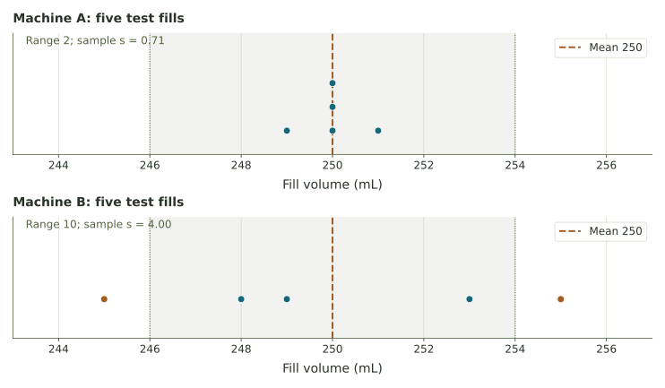

Choosing a filling machine
Compare center, bottle-to-bottle spread, and a stated acceptance rule using two five-bottle samples.
The target and the test fills
Two machines are set to fill bottles to 250 mL. Engineers sample five bottles from each. A machine should be near the target and reasonably consistent from bottle to bottle. These are different questions.
| Machine | Bottle 1 | Bottle 2 | Bottle 3 | Bottle 4 | Bottle 5 |
|---|---|---|---|---|---|
| A | 250 | 251 | 249 | 250 | 250 |
| B | 245 | 255 | 248 | 253 | 249 |
The company’s rule for this test is that every sampled fill must lie from 246 through 254 mL, including the endpoints. This is a stated process rule, not a range calculated from the data.
Center and consistency are different
A sample of 98, 100, 102 averages 100 with range 4. A sample of 90, 100, 110 also averages 100 but has range 20. The shared average does not guarantee similar individual fills.
Calculate and compare
Use the sample SD: subtract the sample mean, square, add, divide by 4, then take the square root.
Machine A
Machine B
Read the result in context

Compare your calculations
Both means are 250 mL. Machine A has range 2 mL and sample SD about 0.71 mL. Machine B has range 10 mL and sample SD 4 mL. A is more consistent in these observations and is the only sample with every fill inside the stated band.
Five observed bottles do not establish what every future bottle will contain. More measurements and information about how the sample was selected would help assess the process.